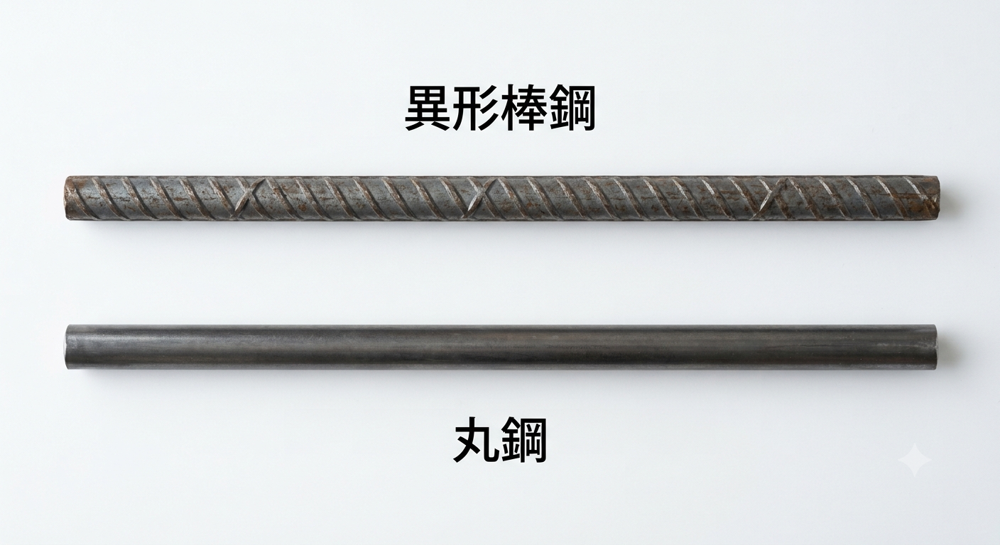

鉄筋の種類とは？丸鋼・異形棒鋼（SR・SD）と呼び名・圧延マークを解説
鉄筋コンクリート造（RC造）に欠かせない鉄筋（棒鋼）には、丸鋼と異形棒鋼の2種類があり、強度（降伏点）によってさらに細かく区別されています。この記事では、SR・SDといった鋼材記号の読み方から、D6〜D51の呼び名（径）、現場で種類を見分ける圧延マーク・色別塗色、そして鉄筋とコンクリートの組合せまで、構造設計の視点で図表を交えてまとめます。
- 鉄筋には丸鋼（記号SR）と異形棒鋼＝異形鉄筋（記号SD）がある。現在の主流はSD。
- JIS規格は棒鋼を降伏点強度で区別する（例：SD345＝降伏点345N/mm²）。H形鋼など他の鋼材が引張強度で区別されるのと異なる点に注意。
- 現場では圧延マーク（突起・刻印）と色別塗色（端部の塗色）で種類を見分ける。
丸鋼と異形棒鋼
鉄筋には棒鋼が用いられます。棒鋼には、表面がつるりとした丸鋼（まるこう）と、表面にリブや節（突起）がついた異形棒鋼（いけいぼうこう）＝異形鉄筋とがあります。鋼材記号は、丸鋼がSR、異形棒鋼がSDです。
JIS規格では、棒鋼の性能を降伏点強度で区別しています。そのため、それぞれの種別表示は「記号＋降伏点強度の数値」という形になります。

鋼材記号の読み方（SR・SD・降伏点強度）
鋼材記号は「材料の種類」と「降伏点強度」を組み合わせて表します。代表的な2例で読み方を確認しましょう。
丸鋼 SR235
- SR ⇒ Steel Round bar（鋼・丸棒）
- 235 ⇒ 降伏点強度 235 N/mm²
異形棒鋼 SD295
- SD ⇒ Steel Deformed bar（鋼・異形棒）
- 295 ⇒ 降伏点強度 295 N/mm²
H形鋼など他の鋼材は引張強度によって性能が区別されています。これに対して棒鋼（鉄筋）は降伏点強度で区別されており、基準とする強度が異なります。記号の数値が「引張強度なのか降伏点強度なのか」を取り違えないよう注意が必要です。
異形鉄筋の表面（リブ・節）と呼び名（D6〜D51）
異形鉄筋は、コンクリートとの密着力（付着力）・定着力を高めるために、表面にリブ（軸方向の突起）や節（軸に対して斜め・横向きの突起）と呼ばれる突起が付けられています。この突起がコンクリートにしっかり食い込むことで、丸鋼よりもはるかに大きな付着力が得られ、鉄筋とコンクリートが一体となって働きます。
異形鉄筋には「呼び名」という、いわゆる鉄筋の径の区分があります。呼び名は小さいものからD6・D10・D13・D16・D19・D22・D25・D29・D32・D35・D38・D41・D51の13種類です。たとえば「D25」とは、呼び名の数値が25mmの異形鉄筋という意味です（Dは Deformed bar の頭文字）。
| 呼び名 | 公称直径(mm) | 公称断面積(mm²) | 単位質量(kg/m) |
|---|---|---|---|
| D6 | 6.35 | 31.67 | 0.249 |
| D10 | 9.53 | 71.33 | 0.560 |
| D13 | 12.7 | 126.7 | 0.995 |
| D16 | 15.9 | 198.6 | 1.56 |
| D19 | 19.1 | 286.5 | 2.25 |
| D22 | 22.2 | 387.1 | 3.04 |
| D25 | 25.4 | 506.7 | 3.98 |
| D29 | 28.6 | 642.4 | 5.04 |
| D32 | 31.8 | 794.2 | 6.23 |
| D35 | 34.9 | 956.6 | 7.51 |
| D38 | 38.1 | 1140 | 8.95 |
| D41 | 41.3 | 1340 | 10.5 |
| D51 | 50.8 | 2027 | 15.9 |
※ 呼び名の数値は公称直径の目安です。突起（節）を含む実寸とは一致しません。
鉄筋の品質と種別（JIS）
鉄筋は、原則として日本産業規格（JIS G 3112「鉄筋コンクリート用棒鋼」）に定められたものを使用します。種別ごとに降伏点強度が決められており、品質・種別の一覧は次のとおりです。種類を取り違えないよう、JISでは圧延マーク（突起・刻印）と色別塗色（端部の塗色）による表示方法も定められています。
| 種類の記号 | 種別を区別する表示方法 | |
|---|---|---|
| 圧延マークによる表示 | 色別塗色による表示 | |
| SR235 | 適用しない | 赤（片断面） |
| SR295 | 適用しない | 白（片断面） |
| SD295A | 圧延マークなし | 適用しない |
| SD295B | 1 又は Ｉ | 白（片断面） |
| SD345 | 突起の数1個（●） | 黄（片断面） |
| SD390 | 突起の数2個（●●） | 緑（片断面） |
| SD490 | 突起の数3個（●●●） | 青（片断面） |
JIS G 3112 は2020年の改正で、従来のSD295A・SD295B が「SD295」に統合されました。古い図書や既存ストックではSD295A・SD295Bの表記が残っているため、本表では従来区分も併記しています。
圧延マークで種類を見分ける方法
鉄筋は見た目が似ていて種類を見分けるのが難しいのですが、ちゃんと見分ける方法があります。異形鉄筋の表面には、鋼材メーカー・鉄筋径・材種（強度区分）がわかるように、文字と点（突起）が表示されています。これを圧延マークと呼びます。
上の表のとおり、たとえば突起が1個（●）ならSD345、2個（●●）ならSD390、3個（●●●）ならSD490という具合に、突起の数で強度区分を読み取れます。あわせて、切断した端部に塗られた色別塗色（黄＝SD345、緑＝SD390、青＝SD490 など）でも確認できます。現場では、配筋検査の際にこの圧延マークと塗色を照合し、設計どおりの材種・径が使われているかをチェックします。
鉄筋とコンクリートの組合せ
鉄筋とコンクリートは、互いの強度バランスを考えて組み合わせます。一般に、鉄筋SD345・SD390に対しては、コンクリートの設計基準強度 Fc＝21N/mm²以上のコンクリートを使用します。これは次のような理由に基づきます。なお、梁断面を小さくするには高張力（高強度）鉄筋を、柱断面を小さくするには高強度コンクリートを使うと有利です。
- 定着・接合部の納まりを確保するため
高強度鉄筋を用いると柱・梁の寸法は節約できますが、その分、接合部のせん断力による定着に対しては寸法（定着長さ）が不足しがちになります。コンクリート強度が低いままだと、せっかくの鉄筋の強度を活かしきれません。 - 構造物に十分な靭性を持たせるため
部材および構造物に十分な靭性（粘り）を持たせるには、降伏点の高い鉄筋には、それに見合った強いコンクリートを組み合わせる方が効果的です。コンクリートが先に圧壊する脆い壊れ方を避ける狙いがあります。 - 強度バランスの目安（Fc は降伏点の約5%以上）
Fc は鉄筋の降伏点強度の4.5〜5%程度以上とするのがバランス的に良いとされます。たとえばSD390なら 390×0.05＝19.5N/mm²となり、これを満たすFc＝21以上が目安になります。 - 標準的な組合せ
実務では、コンクリート Fc＝24N/mm²、鉄筋 SD345 の組合せが標準としてよく用いられます。
| 鉄筋（降伏点） | 推奨するコンクリート Fc | 備考 |
|---|---|---|
| SD295（295N/mm²） | Fc＝18〜21以上 | 小規模・一般部 |
| SD345（345N/mm²） | Fc＝21〜24以上 | Fc24＋SD345が標準的な組合せ |
| SD390（390N/mm²） | Fc＝21以上（≒390×5%） | 梁主筋などに採用 |
| SD490（490N/mm²） | 高強度コンクリートと併用 | 高層・大断面の柱梁など |
- 鉄筋は降伏点強度で区別（SD345＝降伏点345）。コンクリートは設計基準強度Fcで区別。
- 高強度鉄筋には強いコンクリートを。Fcは降伏点の約5%以上が目安（標準はFc24＋SD345）。
まとめ
- 鉄筋（棒鋼）には丸鋼（SR）と異形棒鋼（SD）があり、JISは降伏点強度で種別を区別する。
- 異形鉄筋はリブ・節で付着力を高め、D6〜D51の呼び名（径）がある。「D25」は呼び名25mmの意味。
- 種類は圧延マーク（突起の数）と色別塗色で見分ける（●＝SD345、●●＝SD390、●●●＝SD490）。
- 鉄筋とコンクリートは強度バランスで組み合わせる。Fc24＋SD345が標準、SD345・SD390にはFc21以上。
鉄筋とコンクリートの役割は「鉄筋コンクリート造（RC造）とは？」、弱点を補う仕組みは「コンクリートと鉄筋の関係」、継手は「鉄筋継手の種類とは？」、コンクリート強度は「高強度コンクリートとは？」をどうぞ。